Meet our team!
Andras Heczey, MD
Principal Investigator
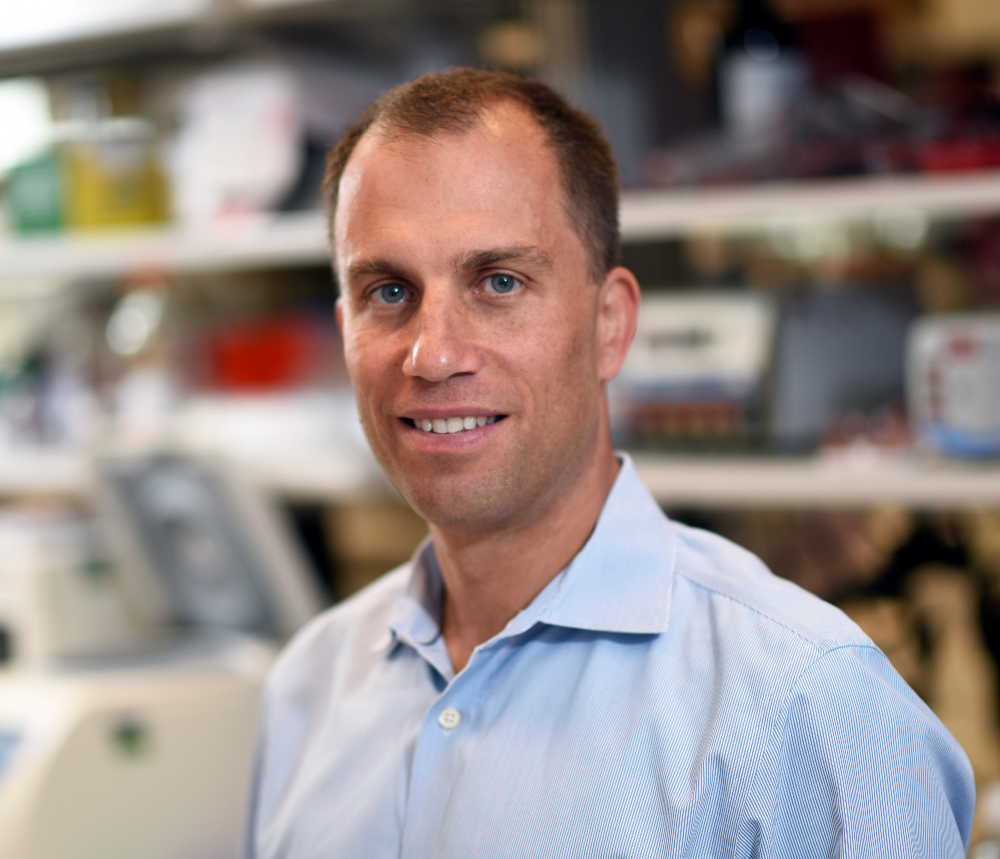
I am a physician scientist in the Department of Pediatrics of the University of Washington, Division of Pediatric Hematology and Oncology, and the Scientific Director of Translational Research - Cell, Gene and Protein Therapeutics at the Seattle Children's Research Institute.
I am a member of the multidisciplinary Solid Tumor team of Seattle Children's, the Ben Towne Cancer Center of SCRI, and the Immunotherapy Integrated Research Center of the Fred Hutch Cancer Center.
My lab’s research focuses on developing novel treatments for children and adults with solid tumors, including neuroblastoma and liver cancers, by redirecting the immune system through genetic engineering to attack the cancer cells.
Michelle Choe, MD
Assistant Professor, Clinical Research Division – Fred Hutch
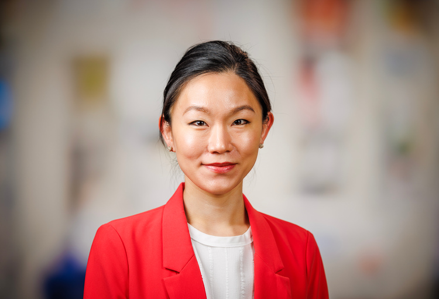
My journey as a pediatric oncologist and blood and marrow transplanter has been greatly influenced by my personal experience being diagnosed with osteosarcoma as a young adult. While I was quite fortunate to have an excellent prognosis, I wrestled with the question of “Why me?” which transitioned “Why not me?” The answers to these questions have fueled my motivation for finding better ways to help those with worse prognosis.
I aim to help test novel cellular therapies for treatment of pediatric solid tumors. I currently serve as the PI for a phase 1 clinical trial evaluating FOLR1-CAR T cells in relapsed/refractory osteosarcoma, as well as a phase 1 clinical trial evaluating IL15/IL21 armored GPC3-CAR T cells for relapsed/refractory GPC3+ solid tumors.
Inci Cevher Zeytin, PhD
Research Scientist III
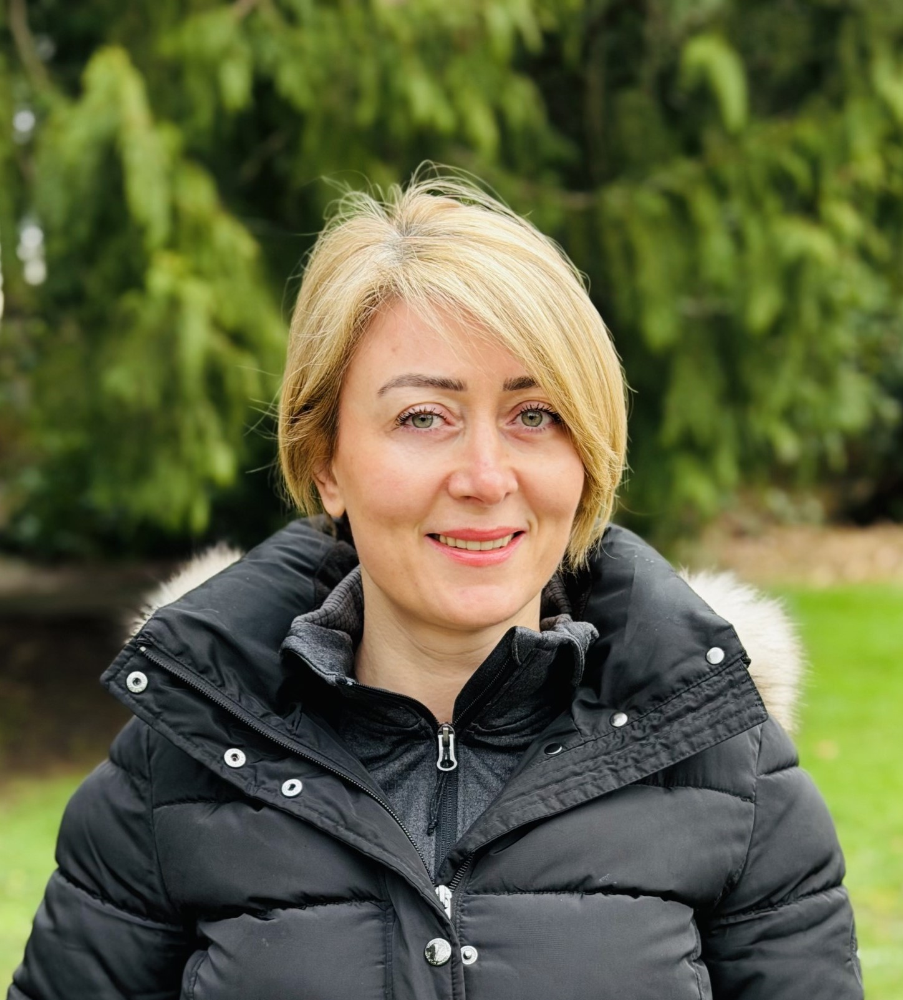
I received my PhD in the Stem Cell Programme from Hacettepe University. During my doctoral training, I modeled the osteopetrotic niche using induced pluripotent stem cell (iPSC)–derived systems, developed iPSC-based models of rare diseases, and generated a rare disease iPSC biobank.
Currently, my research focuses on developing next-generation CAR T cell therapies for solid tumors. I design synthetic protein–based CAR architectures, investigate the modulation of interferon and inflammatory signaling pathways, and apply translational strategies to enhance the anti-tumor efficacy, persistence, and durability of engineered T cells in clinically relevant models, to translate these approaches into early-phase clinical trials. In parallel, I advise on GMP-related processes and train PhD students, rotation students, and junior research scientists. Outside the laboratory, I enjoy photography, musical theatre, and traveling, with a particular interest in exploring different cultures.
Zachary Bennett, PhD
Postdoctoral Fellow

Originally a Texas native (yee-haw), I earned a B.S. in biomedical engineering from the University of Texas at Austin and a Ph.D. in biomedical engineering from UT Southwestern Medical Center. During my Ph.D. training in Dr. Jinming Gao’s lab, I developed ultra-pH-sensitive nanoparticles for cancer imaging and immunotherapy applications. I was awarded a predoctoral National Research Service Award (F31) from the NIH/NCI to develop STING-activating cancer vaccines.
My work in the Heczey Lab seeks to enable in vivo CAR T cell therapy through vector engineering. I am designing affinity-based binders for improved lentivirus tropism to T cells. Outside of the lab, I enjoy eating and drinking my way around the Seattle area.
Yang Wang
Research Scientist I
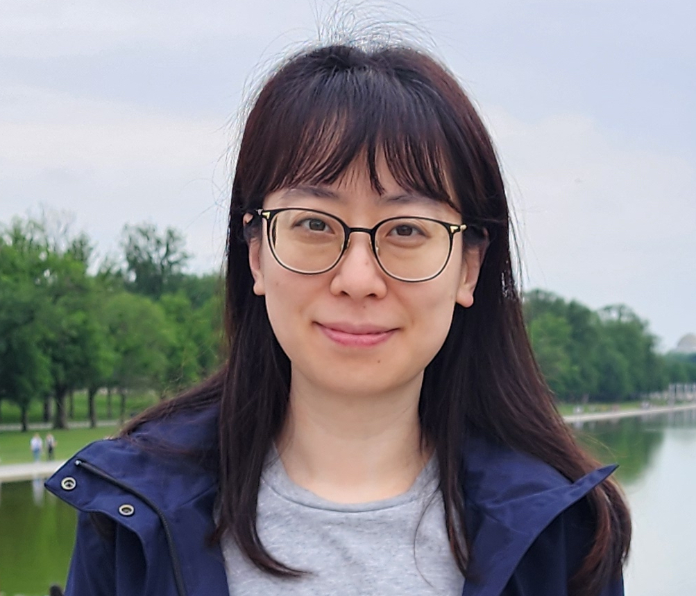
I earned a B.S. degree in biology at University of Washington. After graduation, I have worked at academic research labs, CRO and biopharmaceutical company, focusing on immunology and oncology. Currently at Heczey’s lab, I mainly support the phase 1 clinical trial: immunotherapy for solid tumor malignancies using IL15/IL21 armored GPC3 specific CAR T cells. In my free time, I love shopping, crabbing, taking care of houseplants and my Koi fish.
David de la Cerda
Bioinformatics Research Associate III
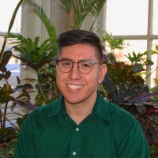
As the bioinformatician for the lab I provide support when it comes to analyzing and storing preclinical and clinical data from our multi-omics related projects. My primary responsibilities include processing and analyzing bulk and single-cell RNA-Seq datasets in the context of our engineered CAR T cells. This is a multi-disciplinary effort that requires input from our clinicians and expert immunologists to uncover which genes are regulated to allow for antitumor activity in our CAR T cells.
I love taking from my previous experience in data science, which stems from both molecular genomics and public health to my everyday work as a bioinformatician. My research interests are in the areas of statistical methodologies that can allow us to better understand immunological cell populations that are contributing to the efficacy of our CAR T cells. In my free time, I enjoy listening to podcasts and going to the movie theater.
Graduate Students
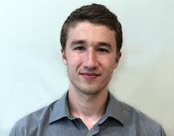
Azlann Arnett
PhD Candidate
I earned my BS in Biochemistry and Biology at the University of Washington. During this time, I worked in the lab of Merrill Hille studying the effects of p120 catenin point mutants on cell migration during gastrulation. After graduating, I worked at Benaroya Research Institute in the lab of Bernard Khor. During that time, I studied T cell development and stasis.
Afterwards, I joined the Heczey Lab for graduate training and have focused my time on identifying novel regulators of T cell biology using high-throughput screening and reverse translating findings from our lab's clinical trials. Away from the bench, Azlann enjoys baking bread, cooking food from around the world, as well as making wine, chocolate, and coffee roasting.
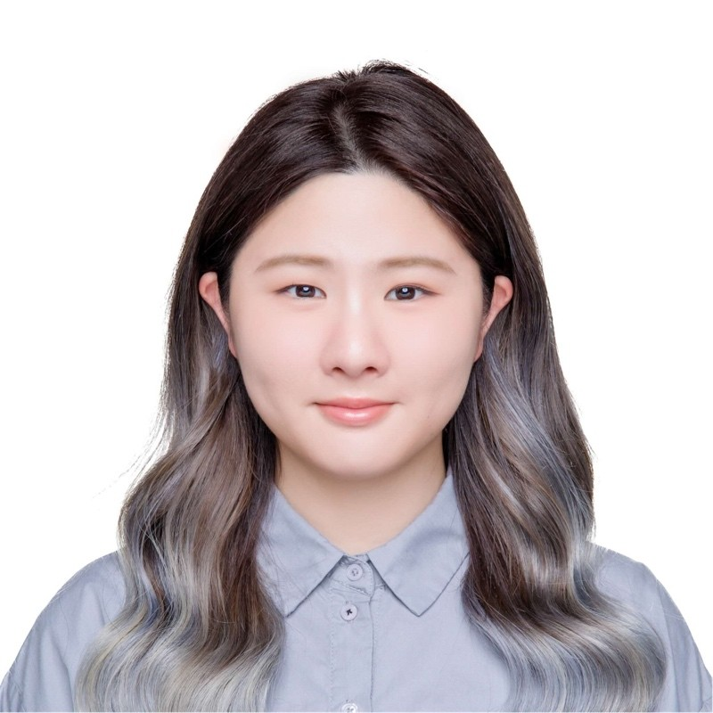
Nikko (Ai-Ni) Tsao
PhD Candidate
I am a graduate student at Seattle Children's Research Institute and Baylor College of Medicine. I am currently working on a project of spatial multi-omics, which investigates the spatial interactions between CAR T cells and the cellular components of the tumor microenvironment. Specifically, I will analyze biopsies from clinical patients who received GPC3 CAR T cell infusions. This project aims to understand how CAR T cells are affected by the tumor microenvironment and their association with antitumor responses. Outside the lab, I love exploring nature with my dog and watching dramas at home.
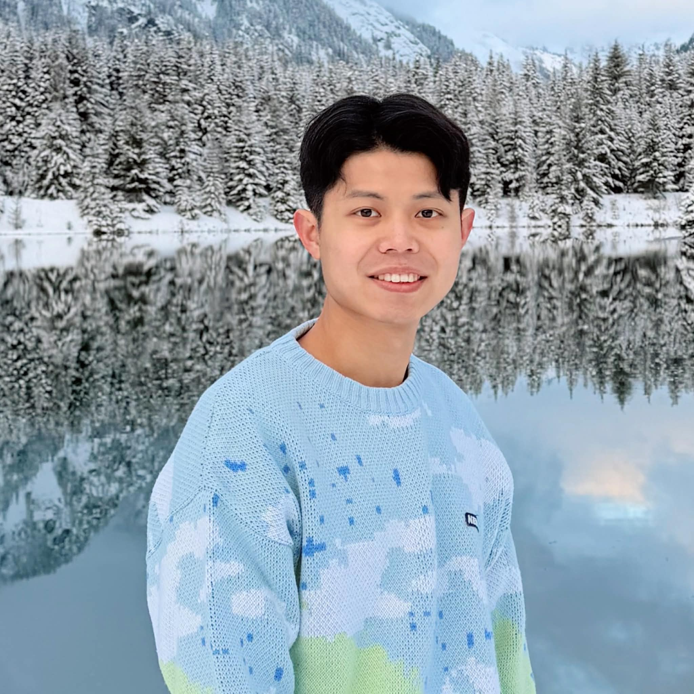
Kevin (Che-Hsing) Li, MD
PhD Candidate
I graduated from Chung Shan Medical University in Taiwan and I am a ECFMG-certified physician in the US. To get training as a physician scientist, I am studying PhD at Seattle Children’s Research Institute. I am in Dr. Andras Heczey’s lab to design next generation CAR T cell therapy for treating solid tumors.
Currently, my research focuses on developing an effective drug-inducible transgene platform in CAR T cells to provide a safer and more potent therapy for solid tumors. Specifically, I have designed a protein-free, RNA-based switch and characterized its kinetics in primary human T cells. My research focuses on modulating the expression of T-cell regulators to potentiate CAR T-cell persistence and reduce off-target toxicity. My career goal is to become a physician-scientist to develop novel and effective therapies and translate them into the clinic to prolong cancer patients’ survival. Outside of the laboratory, I like watching dramas, listening to K-pop, and traveling.
Baylor College of Medicine
Collaborators
Amy Courtney, PhD
Assistant Professor
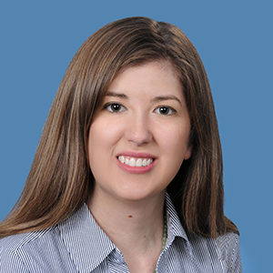
Dr. Amy Courtney is an immunologist with over 15 years of experience in both basic and translational oncology research. She earned her PhD in Viral Immunology from The University of Texas Health Science Center at Houston before completing her post-doctoral fellowship in Tumor Immunology at Baylor College of Medicine. Her research primarily focuses on the biology of invariant natural killer T cells and the development of protocols to isolate and expand human NKTs for clinical applications.
Dr. Courtney currently serves as an investigator for multiple clinical and preclinical research, including studies that utilize CAR-engineered NKT cells for patients with neuroblastoma. Additionally, she investigates the complex cross-talk between NKT cells and immunosuppressive tumor-associated macrophages within the tumor microenvironment to uncover new strategies for enhancing tumor immune surveillance.
David Steffin, MD
Assistant Professor
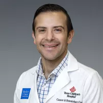
Dr. David Steffin has a clinical expertise in hematopoietic stem cell transplant with a special emphasis in cellular therapies for relapsed/refractory solid tumors. He is also a member of the Center for Cell and Gene Therapy (CAGT) and the Dan L. Duncan Comprehensive Cancer Center at Baylor College of Medicine.
His research focuses on developing novel treatments for children with solid tumors by redirecting the immune system to attack and kill cancer cells using genetically-engineered T cells. Dr. Steffin is a principal investigator and co-investigator on a number of phase 1 clinical trials using CAR T cells to target solid tumors in children. He is also involved in several clinical projects within the bone marrow transplant unit to improve quality of care and patient safety.
Dr. Steffin is a graduate of the Technion-Israel Institute of Technology in Haifa, Israel. He completed his residency in pediatrics at Maimonides Medical Center in Brooklyn, NY. This was followed by his fellowship training in pediatric hematology/oncology and an additional year of subspecialty training in hematopoietic stem cell transplantation and immunotherapy at Texas Children’s Hospital/Baylor College of Medicine.
Lab Life
Moments from our lab outings, conferences, and celebrations

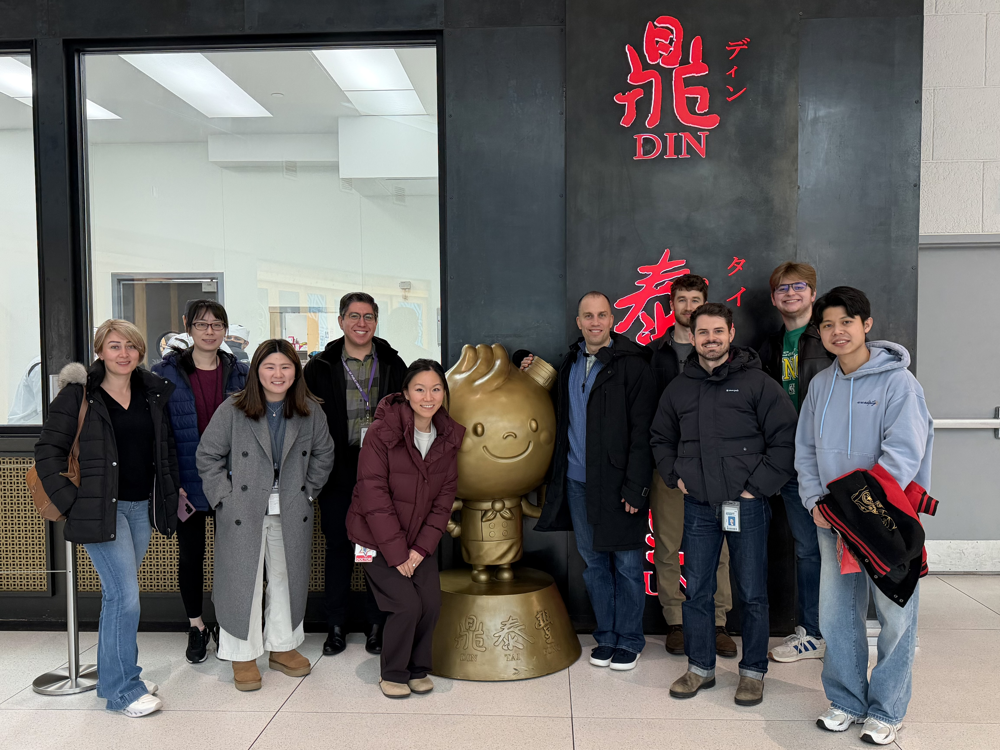
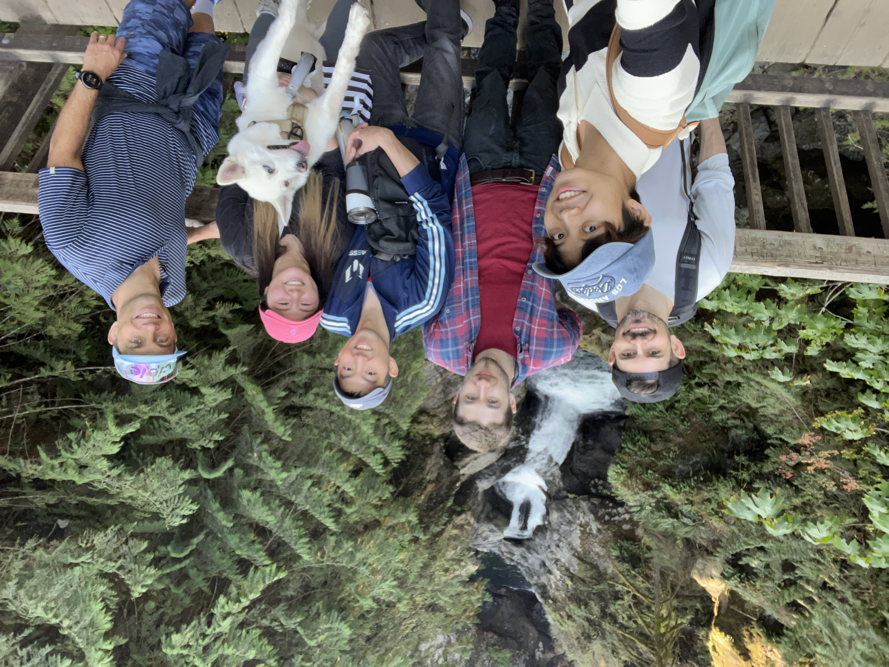
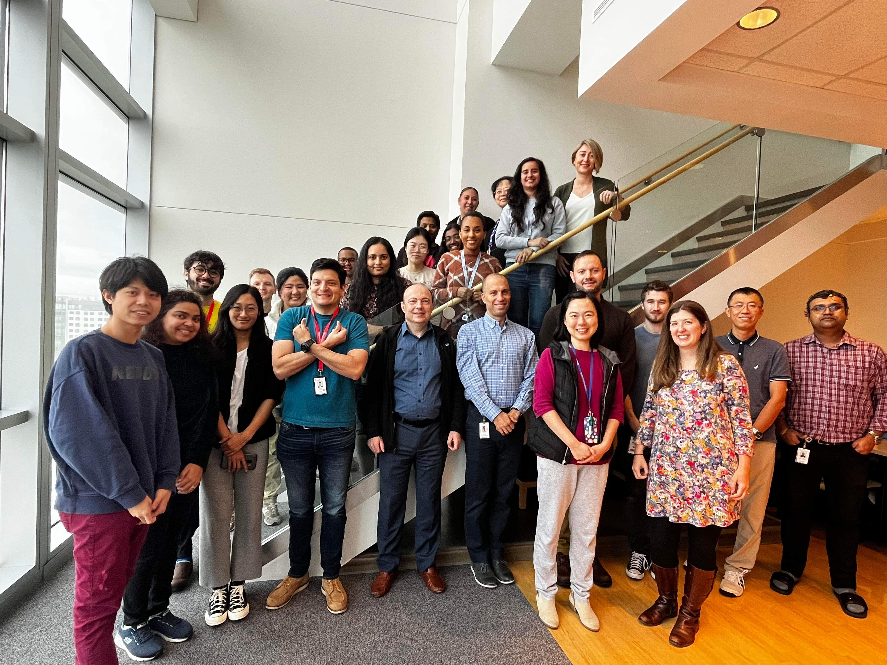
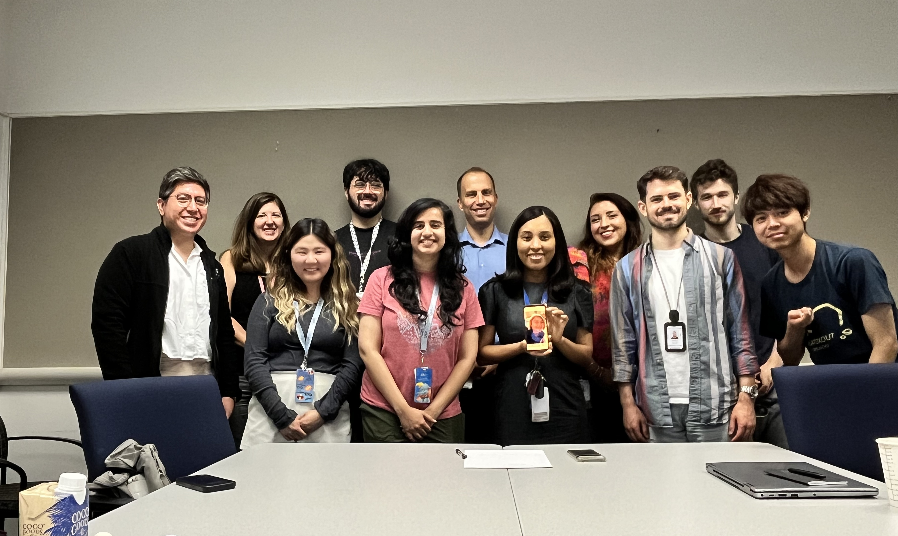

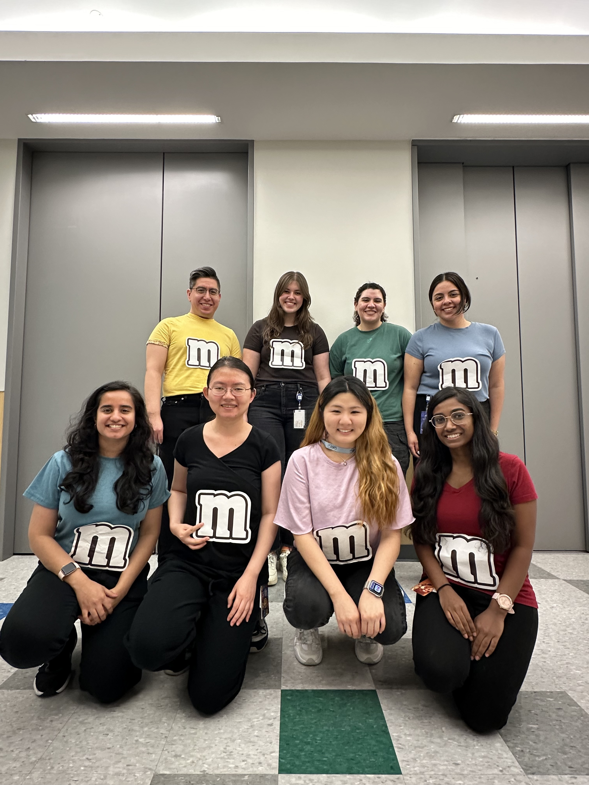
Lab Alumni
-
Leidy Caraballo Galva, PhD
Postdoctoral Fellow (2022-2024) – Current Position: Instructor - Dept of Pediatrics, Baylor College of Medicine.
-
David Cunningham, PhD
Postdoctoral Fellow (2018 - 2024) – Current Position: Scientific Lead, Strength Therapies, LLC.
Join Our Team
We are always looking for motivated Postdoctoral Fellows, Graduate Students, and Research Technicians to join our mission in developing novel CAR T-cell therapies.
If you are interested in our research, please reach out with your CV and a brief statement of your research interests.